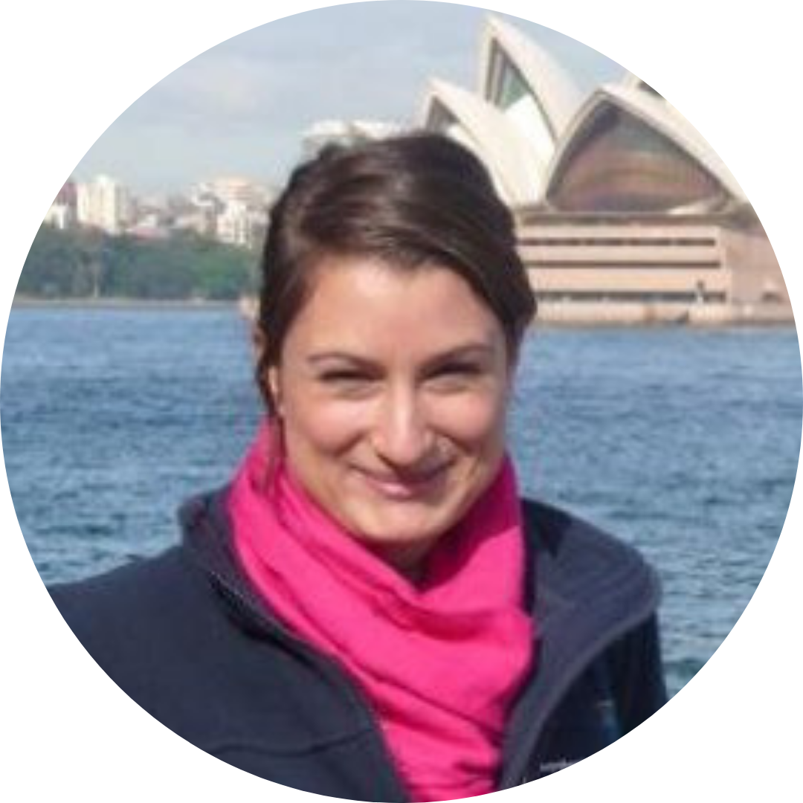

Hi! I'm Nic Fox

I'm an experienced IT professional with a Data Science MSc, Computing BSc and 20 years experience working in the IT industry, in the UK and abroad. Most of my time has been spent performing Business Analysis but I've also stepped into associated roles including Development Manager, Programme Manager and Architect.
I'm currently in my first year of a Criminology PhD at the University of Manchester, researching the identification of vulnerability and harm in return interviews with children who have been missing.
Outside of Work
When I'm not working or volunteering, I enjoy analysing open data for fun, running, cycling, swimming and sewing. I love learning new things and challenging myself.
In the past I've:
Taught English as a volunteer in a small village in India
Completed the Outlaw ironman triathlon
Gained the Manchester Wheeler's club record for the women's 12 hour time trial bike race
Increased the % of female club members using various methods including this video during a year as Membership Secretary for Manchester Wheelers
Set up and run an online store to raise money for charity